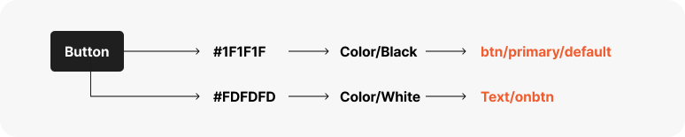
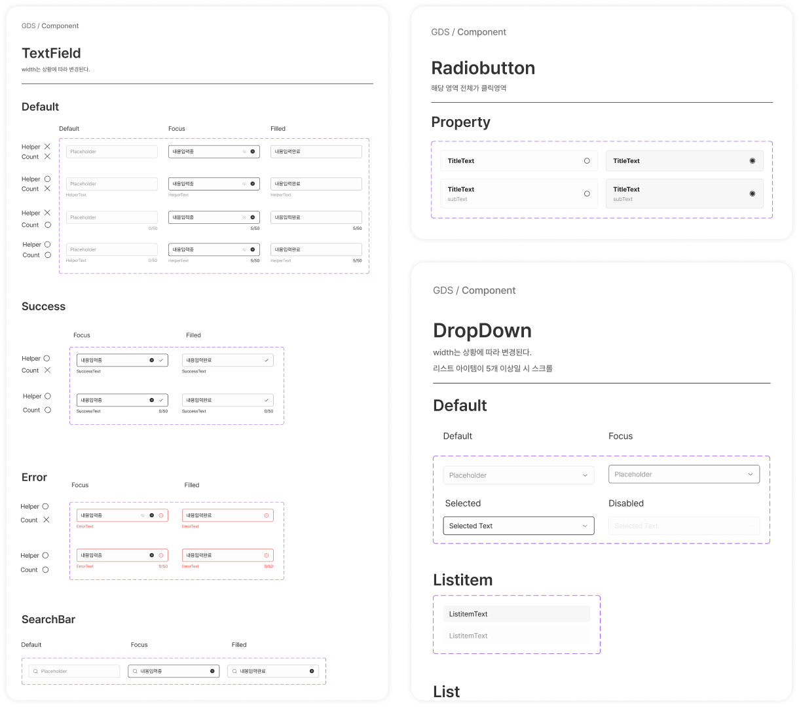
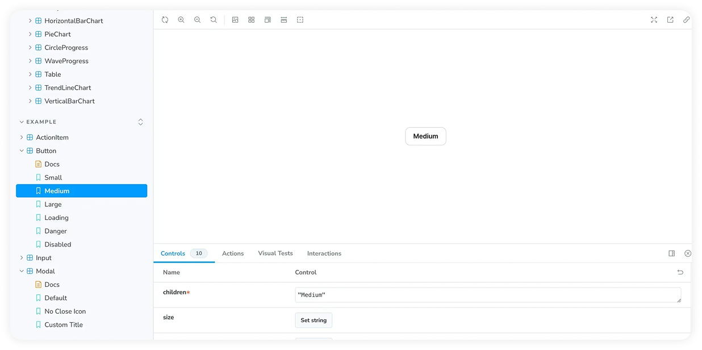
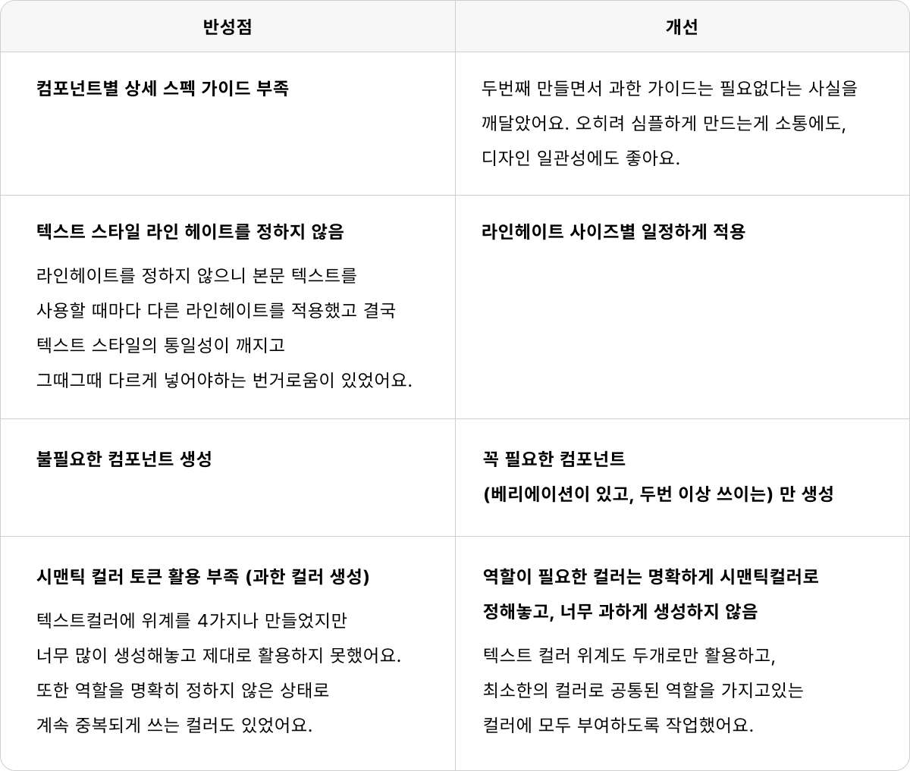

디자인 시스템 구축
무엇을 해결하기 위해 만들것 인가?
디자인 일관성 확보
혼자 만드는 제품이라 하더라도 디자인 변경용이성, 유지보수성, 일관성은 중요해요.
동일한 버튼, 동일한 색상을 어디에서나 일관되게 사용할 수 있어요.
작업 공수 절감
스토리북 기반의 디자인 검수 환경이 구축되어, 출시 전 디자이너가 직접 UI를 확인하고 수정을 요청할 수 있어요.
유지보수 편의성
여러 화면에서 관리할 UI요소와 속성의 수가 많다면,
어떤 요소를 변경했을 때 제품의 여러 부분에 흩어져있는 요소들을 확실하게 변경해서 확인하는 것이 힘들어요.
디자인 시스템으로 일괄적으로 관리하면 해결 가능해요.
개발 커뮤니케이션 효율화
컴포넌트 명명 규칙, 시맨틱 컬러 등 디자이너-개발자간의 언어가 통일되고,
세세한 여백 관리 등 레이아웃 등이 명시되어있어 UI 디자인에 소요되는 커뮤니케이션이 감소되고 개발자가 실수할 확률이 줄어들어요.
파운데이션
시맨틱 컬러가 필요한 이유

굿덕 전 회사에서 처음 디자인 시스템을 만들었을 때, 시맨틱컬러의 중요성을 몰랐어요.
그래서 만들었지만 제대로 활용하지 못했어요. 활용하지 못하는 채로 디자인을 진행하니, 여러 문제가 있었어요.
과하게 컬러를 많이 생성해서 제대로된 역할에 쓰이지 못해 뒤죽박죽이 되어 일관성에 문제가 생겼을 때 시맨틱컬러의 중요성을 직접 체감하게 됐어요.
1. 의미 기반으로 색상을 관리할 수 있어 일관성이 유지됨.
#FF0000 같은 원색 값을 직접 쓰는 대신, error, success, warning, primary 같은 의미 단위의 토큰으로 정의하면,
“왜 이 색이 쓰였는가(의도)”에 따라 이해할 수 있어, 단순 색상 코드보다 역할의 의미를 이해하기 쉬워 관리가 용이해져요.
디자이너와 개발자가 같은 용어(error, success)를 공유하므로 커뮤니케이션도 훨씬 명확해져요.
2. 색상 변경 및 확장성
브랜드 리뉴얼, 접근성 강화가 필요할 때 시맨틱 레이어만 수정하면 전체 시스템에 반영할 수 있어요.
예를 들어, 브랜드 리뉴얼로 primary 컬러변경이 필요할 때, 시맨틱 컬러 토큰을 쓰면 한번에 변경 가능해요.
레이아웃이 필요한 이유
Layout 정의는 디자인 시스템의 "뼈대" 역할을 하며, 일관성, 생산성, 유지보수성, 확장성을 모두 높여줄 수 있어요.
1. 일관성 있는 사용자 경험
모든 화면에서 margin, padding, TitleArea, Container 같은 요소들이 동일한 규칙으로 배치되므로,
사용자는 익숙한 패턴 속에서 앱을 탐색할 수 있어요.
2. 디자인·개발 생산성 향상
- 디자이너가 새로운 화면을 만들 때 기본 골격(Layout)을 재사용하므로 작업 속도가 향상되어요.
- 개발자는 동일한 컴포넌트 구조를 그대로 적용하면 되니 불필요한 UI 맞춤작업이 줄어들어요.
- 불필요한 커뮤니케이션(“이 화면은 margin 몇 px로 할까요?”)이 줄어들어요.
3. 유지보수 용이성
margin, status bar 높이, title area 규칙을 전역에서 정의하면, 추후 디자인 개편 시 한 곳만 수정해도 전체 화면에 반영할 수 있어요.
(예: margin 16px → 20px로 바뀌어도 레이아웃 시스템만 업데이트하면 전체 앱이 자동 적용.)
버전 관리 원칙
버전 관리를 위한 업그레이드 기준
제품 수, 팀 규모, 사업 단계 등에 따라 변화하므로 디자인시스템에 완성은 없다고 생각해요.
시행착오를 반복하면서 목적을 달성하기 위해 개선을 반복하는 것이 디자인시스템의 본질이에요.
소수점 세자리 수 단위 (0.0.1) 단위로 관리하고, 자릿수 별로 변경할 때의 기준은 다음과 같다.
가장 높은 단위 : 첫번째 자리 변경 기준
개념적이고 전체적인 철학의 변화 : 브랜딩 방향성 변경으로 인한 리디자인 등으로 제품 전체를 관통하는 변화일 때
중간 단위 : 두번째 자리 변경 기준
많은 부분이 한꺼번에 생성되는 경우 : 전체 로드맵상에서 계획적 버전 업데이트나 새 프로젝트가 제품에 반영되는 경우
가장 작은 단위 : 세번째 자리 변경 기준
컴포넌트 변경 및 추가, 삭제 : 미세한 수정사항 부터 컴포넌트 추가, 삭제까지 상황에 따라 대응
1. 변경 내역의 추적 가능성과 히스토리 관리 용이
단순히 “디자인이 바뀌었다”가 아니라, 어떤 수준의 변화(대규모/부분/세부)인지를 명확히 구분할 수 있어
나중에 특정 시점의 디자인 상태를 복원하거나 참고해야 할 때 기록을 찾아볼 수 있어요.
디자인 시스템의 발전 과정을 되돌아볼 때, 철학 변화, 프로젝트 반영, 컴포넌트 수정이 언제 있었는지 쉽게 알 수 있어요.
2. 팀 간 커뮤니케이션 효율성 증가
“이건 0.0.1 업데이트니까 세부 수정이야” 같은 식으로 팀원들이 버전 숫자만 보고도 변경 범위와 영향도를 직관적으로 알 수 있어요.
3. 배포 안정성 강화
버전 원칙에 따라 변경 크기를 나누면, 작은 수정(0.0.1)과 큰 개편(1.0.0)을 구분할 수 있어 위험 관리가 쉬워져요.
서비스에 즉시 반영해도 되는지, 아니면 QA·테스트를 반드시 거쳐야 하는지 판단 기준이 가능해요.
4. 일관된 업데이트 프로세스
업데이트 기준이 없으면 “이건 새 컴포넌트니까 어떻게 버전을 올려야 하지?” 같은 논란이 생길 수 있어요.
원칙을 정해두면 누구나 같은 기준으로 버전을 올리므로, 일관성 있는 기록 관리가 가능해요.
컴포넌트
해당 컴포넌트의 사용, 디자인 가이드를 필요한 만큼만 적고
변형(Variation) 기준을 고려하며 컴포넌트를 만들었어요.

결과
스토리북이 나오면서 출시 전에 즉각적인 대응이 가능해졌어요.

굿덕에선 스토리북을 사용하고 있지않아 도입하자고 제안했어요.
예를 들어 데이터 센터 그래프가 스토리북으로 나왔을 때, 막대 그래프가 6개 이상이면 어떻게 나오지?
라는 궁금증이 생기면 그 즉시 스토리북에서 해보고, 디자인적으로 이상이 생기면 전달했어요.
출시 후 수정이 아니라 출시 전 수정이 가능해졌어요. 또한 디자이너가 개발자의 언어를 이해하기 쉬워졌어요.
스토리북으로 간단한 조작이 가능해지면서 이럴때 이 언어를 쓰는구나 하는 이해가 조금은 가능해져요.
개발자와의 커뮤니케이션 감소
디자인 시스템을 만든 후 개발자분들과 커뮤니케이션하는 시간이 현저히 적어졌어요.
디자인 시스템에 있는 컴포넌트대로 만드니 개발자는 그대로 개발하면되고, 디자인에 들어가는 소통이 줄어든 만큼
기획적으로 변경사항이 있을 때, 로직이 바뀌었을 때 설명하는 시간에 할애할 수 있었어요.
회고
1차 디자인 시스템 구축 반성점을 2차에서 개선
전 회사에서 처음으로 디자인 시스템을 만들었을 때와 굿덕에서 두번째로 만들었을 때를 비교하여 반성점과 개선한 점을 정리했어요.
